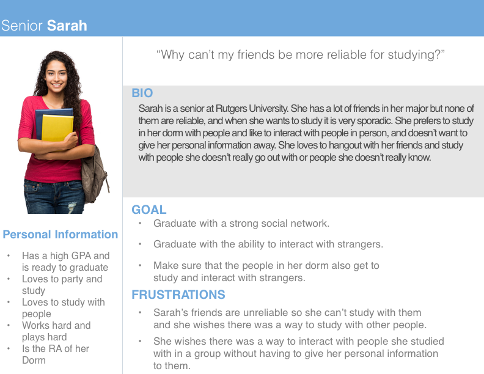

Personas
(Please click on the Persona images for more detail)
Sarah
Task Analysis
Goal: Form a study group in her English class
Task: Identify like minded students
Actions:
- Attend class
- Socialize with fellow students after class
- Identify commonalities between you and fellow students (study habits, understanding, schedule)
Task Analysis: Identify like-minded students.
Variety of task: should not vary for most rutgers students, unless they are taking online courses. If so they must communicate by virtual means.
Frequency of task: May occur until reliable group is found or throughout entirety of course.
Knowledge and skill required to perform tasks: Social and organizational skills.
Environmental factors: None.
Time criticality: Time very critical based on exam/assignment schedule.
Safety hazards: No safety hazards.
Collaboration: Students are forced to work together in order to find solution for their study needs.
User's Multitasking behavior: Student may do this for multiple courses at a time.
Task: Form a study group
Actions:
- Collect contact information with like minded students
- Give personal contact info
- Establish a reliable contact medium
- Set study times around student schedules.
- Set study locations based on individual localities.
- Pull out smartphone
- Open note/calendar app
- Input contact, study time, and location info into phone
Task Analysis: Form a study group
Variety of task: should not vary for most Rutgers students, unless they are taking online courses. If so they must communicate by virtual means
Frequency of task: May occur until reliable group is found or throughout entirety of course.
Knowledge and skill required to perform tasks: Social and organizational skills.
Environmental factors: Can be affected by weather and time management.
Time criticality: Time very critical based on exam/assignment schedule.
Safety hazards: no safety hazards
Collaboration: Students are required to work together in order to find solution for their study needs.
User's Multitasking behavior: Student may do this for multiple courses at a time.
Task: Attend a study group
Actions:
- Pull out smart phone
- Refer to information about time and location saved from before
- Verify that every member can attend the study session at the decided time and place
- Attend meeting
- Study desired topic
Task Analysis: Form a study group
Variety of task: should not vary for most Rutgers students, unless they are taking online courses. If so they must communicate by virtual means
Frequency of task: May occur until reliable group is found or throughout entirety of course.
Knowledge and skill required to perform tasks: Social and organizational skills.
Environmental factors: Can be affected by weather and time management.
Time criticality: Time very critical based on exam/assignment schedule.
Safety hazards: no safety hazards
Collaboration: Students are required to work together in order to find solution for their study needs.
User's Multitasking behavior: user will multitask
Mike

Task Analysis
Goal: Mike wants to obtain an "A" on his upcoming biology exam.
Task I - Find out when and where the exam is
Actions
- Open his macbook
- Open up a web browser and log into sakai
- Navigate to his biology class tab
- Navigate to the class Syllabus
- Find the exam date/location
Task Analysis
- Variety of Task: Some students might have written down the exam info somewhere else or simply remembered when it's announced in class.
- Frequency of Task: Perhaps more than once if student forgets the info
- Knowledge and Skill Required: Able to read and use the internet
- Environmental Factors: None
- Time Criticality: Has to be done as soon as possible to ensure student does not miss the exam.
- Safety Hazards: None
- Collaboration: Alone
- User's Multitasking Behavior: No, user won't be switching between several tasks
Task II - Find out what is on the exam
Actions
- Navigate to the recent announcements tab
- Click on the announcement pertaining to the exam
- Find the info on what is on the exam in that post
Task Analysis
- Variety of Task: Some students may know what's on the exam from memory and not need this step
- Frequency of Task: Whenever the student needs to find out what's on the exam, so multiple times
- Knowledge and Skill Required: Able to read and use the internet
- Environmental Factors: None
- Time Criticality: Should be done as soon as possible to ensure the student studies the right materials
- Safety Hazards: None
- Collaboration: Alone
- User's Multitasking Behavior: User won't be switching between multiple tasks
Task III - Make sure he has all the notes for what will be on the exam
Actions
- Think of who he may know in the class to compare notes
- Realizes he doesn't know anybody
- Opens up his laptop
- Open up the web browser and go to gmail
- Create a new email addressed to the professor to make sure he has all the notes
- Wait for email back. Open up email when it's received
- Open up email when it's received
Task Analysis
- Variety of Task: Some students may contact friends instead to obtain this information
- Frequency of Task: Only once
- Knowledge and Skill Required: Able to read
- Environmental Factors: None
- Time Criticality: Earlier the better for a smooth studying process
- Safety Hazards: None
- Collaboration: Alone
- User's Multitasking Behavior: User may possible check what will be covered on the exam while looking at notes
Task IV - Make sure he studies every concept in his notes
Actions
- Gather his laptop, notes, and notebook
- Make room on his desk in his dorm room
- Go through his notes lecture by lecture
Task Analysis
Task V - Wake up on time for exam
Actions
- Grab phone
- Open up alarm app
- Set alarm for 2 hours before his exam
- Find charger
- Plug phone into charger
- Wake up
Task Analysis
- Variety of Task: Some students may not need an alarm to wake up
- Frequency of Task: Only once
- Knowledge and Skill Required: How to use a smartphone
- Environmental Factors: None
- Time Criticality: Before the student sleeps the night before the exam
- Safety Hazards: None
- Collaboration: Alone
- User's Multitasking Behavior: No the user will not be multitasking
Task VI - Get to exam
Actions
- Grab phone
- Open rutgers app
- Check bus times
- Leave apartment and lock the door
- Wait at bus stop
- Ride bus to exam location
- Walk to the classroom
Task Analysis
- Variety of Task: Most students will do the same thing unless they drive
- Frequency of Task: Just once
- Knowledge and Skill Required: Know bus routes and how to use smartphone
- Environmental Factors: Rain may make student wait for bus indoors instead
- Time Criticality: Must leave early enough to make it to exam on time
- Safety Hazards: None
- Collaboration: Alone
- User's Multitasking Behavior: No multitasking
Task VII - Take the exam
Actions
- Sit down
- Grab pencil
- Take the exam when it's handed to him
Task Analysis
- Variety of Task: All students will do the same thing
- Frequency of Task: Only once
- Knowledge and Skill Required: The material that will be covered
- Environmental Factors: None
- Time Criticality: Must finish before time is up
- Safety Hazards: None
- Collaboration: Alone
- User's Multitasking Behavior: No multitasking